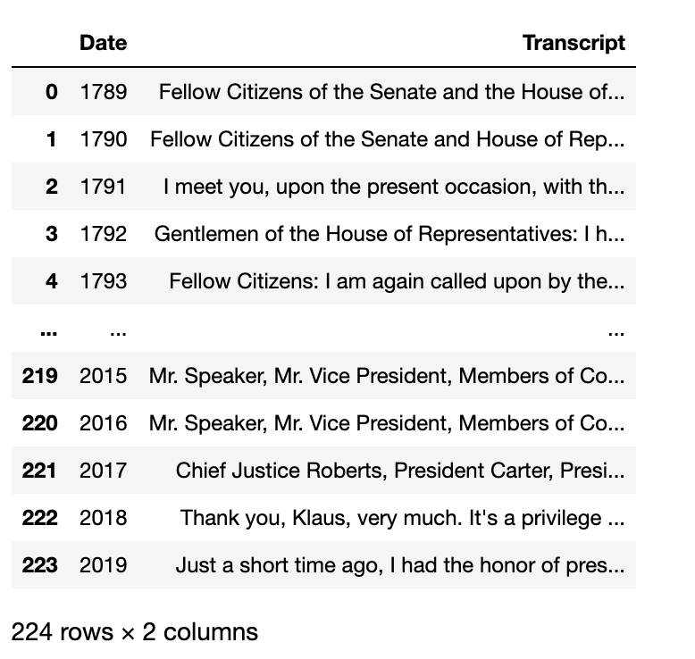
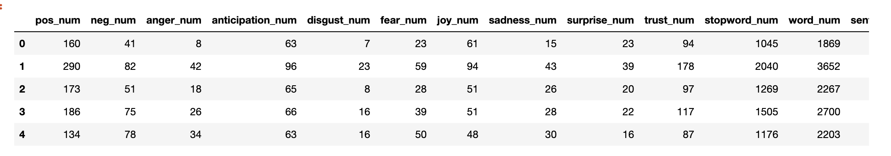
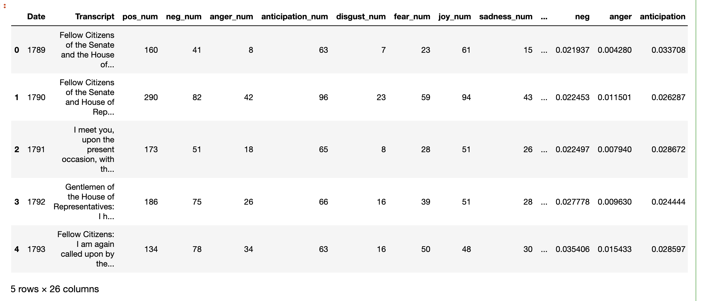

分享一篇研究语言积极倾向的论文，论文中使用Python工具进行词频统计，大大降低了人工成本，提高了科研效率。
该论文发表在PNAS：
Iliev, R., Hoover, J., Dehghani, M. and Axelrod, R., 2016. Linguistic positivity in historical texts reflects dynamic environmental and psychological factors. Proceedings of the National Academy of Sciences, 113(49), pp.E7871-E7879.
一、研究背景
作者指出：当前关于 LPB(language positivity bias)作用机制 的驱动因素有普遍的普遍的认知偏差、情感状态、客观环境和社会规范，但是究竟是哪种机制驱动LPB，以及这种影响是否可能是由于这些或其他因素子集之间的相互作用驱动的，尚无研究讨论。造成这种不确定性的一个原因是，以前对 LPB 的调查采用了语言的共时方法，并且无法提供任何洞察力来了解 LPB 在给定语言中是否或在何种程度上具有跨时间和上下文的稳定。在该研究中，作者采用了一种将 LPB 视为动态现象的方法。具体来说，使用两个带时间戳的美国英语语料库，研究 LPB 中的经度变化作为主观、客观和社会因素的函数。这种方法可以研究 LPB 的历时变化，这是一个未探索的影响维度，而且还可以在先前提出的 LPB 解释之间进行裁决。
二、研究过程
提出五个假设：
-
LPB没有线性趋势
-
LPB 随着时间的推移而增加。
-
LPB 随着时间的推移而减少。
-
LPB 的变化来预测，环境恶化将与LPB的降低相关联。
-
LPB的变化将通过集体影响的变化来预测，因此国家层面幸福感的下降将与LPB的下降相关。
开展四个研究：
-
线性趋势
-
战争伤亡人数
-
经济苦难
-
主观幸福
三、数据来源
- 情感词典：使用了语言查询和字数统计 (LIWC) 词典 (56) 中的正面和负面情绪词类别，其中包含 907 个词和词干。正面类别有 408 个条目，负面类别有 499 个条目。
- 战争伤亡人数：使用了来自美国退伍军人事务部 (57) 的情况说明书中的数据，并计算了过去两个世纪美国参与的战争中美国军人的平均伤亡人数。
- 痛苦指数：使用了来自 www.miseryindex.us 的数据，其中包含 1948 年至 2015 年期间美国的苦难指数指标。
- 幸福指数：使用了世界幸福数据库中有关美国幸福感的调查数据。
四、研究发现：
- 美式英语中情感词的使用随着时间的推移而减少。
- 发现了 LPB 纵向下降趋势的令人信服的证据。这种趋势在谷歌 Ngrams 语料库中非常强烈，在纽约时报语料库中略显重要。
- 发现 LPB 也随着战争的伤亡人数而减少。
- LPB 可以通过客观环境的不太极端的测量来预测。在控制时间后，我们发现痛苦指数较高的年份在两个语料库中的 LPB 水平往往较低。
- 发现 LPB 的短期波动随全国幸福指数的变化而变化。
- 这些结果进一步证实了LPB 不能简单地解释为普遍认知机制的功能。
五、代码
为简化学习难度，论文细节部分不展开。本文主要给大家展示用Python做情感词频统计、词频历时折线图这两部分内容。先安装需要的包
!pip3 install pyecharts==1.6.2
!pip3 install pyecharts-javascripthon==0.0.6
!pip3 install pyecharts-jupyter-installer==0.0.3
!pip3 install pyecharts-snapshot==0.2.0
5.1 实验数据集
美国政治在其年轻的生命周期中经历了许多意识形态的动荡。这些动荡被称为政治时代。“政治时代是指在历史和政治科学中使用的一种美国政治模式，用于分类存在于美国的政党制度。” 数据集作者创建这个数据集的原因是为了正确讨论过去的政治事件，了解各个时期的政治平台和氛围是很重要的。例如，民主党和共和党的政治理念在不同的时期发生了巨大的变化，党派之间的理念也在不断转变、涌现和消失。截至目前为止，美国政治中已经公认了6个政治时代，分别是：
- 第一党派制度（1792年至1824年）
- 第二党派制度（1828年至1854年）
- 第三党派制度（1854年至1895年）
- 第四党派制度（1896年至1932年）
- 第五党派制度（1932年至1964年）
- 第六党派制度（1964年至今）
我将总统同一个年度的演讲汇总到一起，最终得到 yearly_american_speech_dataset.csv 。
import pandas as pd
df = pd.read_csv('yearly_american_speech_dataset.csv')
df['Date'] = df['Date'].apply(str)
df

5.2 小实验
写代码讲究先把任务抽象化， 将大问题拆解成可组装的小问题。即先小后大，先局部后整体。这里推荐用Python中的cntext库，该库文档清晰，代码简洁。先安装
!pip3 install scikit-learn==1.0
!pip3 install cntext==1.8.4
最简单的情感分析，即分析一句话 text 的正负面情感词出现的词频。
import cntext as ct
text = 'What a sunny day!'
diction = {'pos': ['sunny', 'good'],
'neg': ['bad', 'terrible']}
ct.sentiment(text=text,
diction=diction,
lang='english')
Run
{'pos_num': 1,
'neg_num': 0,
'stopword_num': 1,
'word_num': 5,
'sentence_num': 1}
根据自定义的词典diciton， 可以看出 What a sunny day! 中有1个pos类词，0个neg类词。
5.3 找个公开的情感词典
计算文本中正负面情感词出现次数， 需要有情感词词表。
#查看cntext内置的词典
import cntext as ct
ct.dict_pkl_list()
['DUTIR.pkl',
'HOWNET.pkl',
'Chinese_Loughran_McDonald_Financial_Sentiment.pkl',
'sentiws.pkl',
'ChineseFinancialFormalUnformalSentiment.pkl',
'Chinese_Digitalization.pkl',
'ANEW.pkl',
'LSD2015.pkl',
'NRC.pkl',
'geninqposneg.pkl',
'HuLiu.pkl',
'Loughran_McDonald_Financial_Sentiment.pkl',
'AFINN.pkl',
'ADV_CONJ.pkl',
'STOPWORDS.pkl',
'Concreteness.pkl',
'ChineseEmoBank.pkl']
查看NRC词典的信息
#NRC词典
print('NRC词典描述: ', ct.load_pkl_dict('NRC.pkl')['Desc'], end='\n\n')
print('NRC参考文献: ', ct.load_pkl_dict('NRC.pkl')['Refer'], end='\n\n')
print('NRC词典内词表有: ', ct.load_pkl_dict('NRC.pkl')['NRC'].keys(), end='\n\n')
print('Pos词表前10个词: ', ct.load_pkl_dict('NRC.pkl')['NRC']['positive'][:10], end='\n\n')
print('Neg词表前10个词: ', ct.load_pkl_dict('NRC.pkl')['NRC']['negative'][:10], end='\n\n')
NRC词典描述: The NRC Emotion Lexicon is a list of English words and their associations with eight basic emotions (anger, fear, anticipation, trust, surprise, sadness, joy, and disgust) and two sentiments (negative and positive). The annotations were manually done by crowdsourcing.
NRC参考文献: Crowdsourcing a Word-Emotion Association Lexicon, Saif Mohammad and Peter Turney, Computational Intelligence, 29 (3), 436-465, 2013.
NRC词典内词表有: dict_keys(['anger', 'anticipation', 'disgust', 'fear', 'joy', 'negative', 'positive', 'sadness', 'surprise', 'trust'])
Pos词表前10个词: ['abba', 'ability', 'abovementioned', 'absolute', 'absolution', 'absorbed', 'abundance', 'abundant', 'academic', 'academy']
Neg词表前10个词: ['abandon', 'abandoned', 'abandonment', 'abduction', 'aberrant', 'aberration', 'abhor', 'abhorrent', 'abject', 'abnormal']
5.4 情感词频统计
使用cntext设计一个函数，将计算得到的文本词数/正(负)面词出现次数, 得到情感词在文中的占比，方便后续的可视化绘图。
def emotion_analysis(text):
diction = {'pos': ct.load_pkl_dict('NRC.pkl')['NRC']['positive'],
'neg': ct.load_pkl_dict('NRC.pkl')['NRC']['negative'],
'anger': ct.load_pkl_dict('NRC.pkl')['NRC']['anger'],
'anticipation': ct.load_pkl_dict('NRC.pkl')['NRC']['anticipation'],
'disgust': ct.load_pkl_dict('NRC.pkl')['NRC']['disgust'],
'fear': ct.load_pkl_dict('NRC.pkl')['NRC']['fear'],
'joy': ct.load_pkl_dict('NRC.pkl')['NRC']['joy'],
'sadness': ct.load_pkl_dict('NRC.pkl')['NRC']['sadness'],
'surprise': ct.load_pkl_dict('NRC.pkl')['NRC']['surprise'],
'trust': ct.load_pkl_dict('NRC.pkl')['NRC']['trust']}
res = ct.sentiment(text=text,
diction=diction,
lang='english')
return pd.Series(res)
#实验ok
text = 'What a sunny day!'
emotion_analysis(text=text)
Run
pos_num 1
neg_num 0
anger_num 0
anticipation_num 1
disgust_num 0
fear_num 0
joy_num 1
sadness_num 0
surprise_num 1
trust_num 0
stopword_num 1
word_num 5
sentence_num 1
dtype: int64
df2 = df['Transcript'].apply(emotion_analysis)
df2.head()

df2.columns
Run
Index(['pos_num', 'neg_num', 'anger_num', 'anticipation_num', 'disgust_num',
'fear_num', 'joy_num', 'sadness_num', 'surprise_num', 'trust_num',
'stopword_num', 'word_num', 'sentence_num'],
dtype='object')
计算情感、情绪的词频(占比)
df2['pos'] = df2['pos_num']/grouped_df2['word_num']
df2['neg'] = df2['neg_num']/df2['word_num']
df2['anger'] = df2['anger_num']/df2['word_num']
df2['anticipation'] = df2['anticipation_num']/df2['word_num']
df2['disgust'] = df2['disgust_num']/df2['word_num']
df2['fear'] = df2['fear_num']/df2['word_num']
df2['joy'] = df2['joy_num']/df2['word_num']
df2['sadness'] = df2['sadness_num']/df2['word_num']
df2['surprise'] = df2['surprise_num']/df2['word_num']
df2['trust'] = df2['trust_num']/df2['word_num']
df2['SentiScore'] = (df2['pos_num']-df2['neg_num'])/(df2['pos_num']+df2['neg_num'])
合并数据数据
res_df = pd.concat([df, df2], axis=1)
res_df.head()

六、可视化
res_df.columns
Run
Index(['pos_num', 'neg_num', 'anger_num', 'anticipation_num', 'disgust_num',
'fear_num', 'joy_num', 'sadness_num', 'surprise_num', 'trust_num',
'stopword_num', 'word_num', 'sentence_num', 'pos', 'neg', 'anger',
'anticipation', 'disgust', 'fear', 'joy', 'sadness', 'surprise',
'trust'],
dtype='object')
import pandas as pd
from pyecharts import options as opts
from pyecharts.charts import Line
from pyecharts.globals import CurrentConfig, NotebookType
CurrentConfig.NOTEBOOK_TYPE = NotebookType.JUPYTER_NOTEBOOK
# 创建折线图对象
line_chart1 = Line()
# 添加 x 轴和 y 轴数据
line_chart1.add_xaxis(res_df['Date'].tolist())
line_chart1.add_yaxis('Sentiment Score',
res_df['SentiScore'].tolist(),
itemstyle_opts=opts.ItemStyleOpts(opacity=0))
# 配置图表选项
line_chart1.set_global_opts(
title_opts=opts.TitleOpts(title="美国总统演讲情感得分年度历时可视化"),
tooltip_opts=opts.TooltipOpts(trigger="axis", axis_pointer_type="cross"),
legend_opts=opts.LegendOpts(pos_right="right",
orient="vertical",
pos_top="center")
)
# 显示图表
line_chart1.render_notebook()

import pandas as pd
from pyecharts import options as opts
from pyecharts.charts import Line
from pyecharts.globals import CurrentConfig, NotebookType
CurrentConfig.NOTEBOOK_TYPE = NotebookType.JUPYTER_NOTEBOOK
# 创建折线图对象
line_chart2 = Line()
# 添加 x 轴和 y 轴数据
line_chart2.add_xaxis(res_df['Date'].tolist())
line_chart2.add_yaxis('Positive',
res_df['pos'].tolist(),
itemstyle_opts=opts.ItemStyleOpts(opacity=0))
line_chart2.add_yaxis('Negative',
res_df['neg'].tolist(),
itemstyle_opts=opts.ItemStyleOpts(opacity=0))
# 配置图表选项
line_chart2.set_global_opts(
title_opts=opts.TitleOpts(title="美国总统演讲正、负面情感年度历时可视化"),
tooltip_opts=opts.TooltipOpts(trigger="axis", axis_pointer_type="cross"),
legend_opts=opts.LegendOpts(pos_right="right",
orient="vertical",
pos_top="center")
)
# 显示图表
line_chart2.render_notebook()

import pandas as pd
from pyecharts import options as opts
from pyecharts.charts import Line
from pyecharts.globals import CurrentConfig, NotebookType
CurrentConfig.NOTEBOOK_TYPE = NotebookType.JUPYTER_NOTEBOOK
# 创建折线图对象
line_chart3 = Line()
# 添加 x 轴和 y 轴数据
line_chart3.add_xaxis(res_df['Date'].tolist())
line_chart3.add_yaxis('anger',
res_df['anger'].tolist(),
itemstyle_opts=opts.ItemStyleOpts(opacity=0))
line_chart3.add_yaxis('anticipation',
res_df['anticipation'].tolist(),
itemstyle_opts=opts.ItemStyleOpts(opacity=0))
line_chart3.add_yaxis('disgust',
res_df['disgust'].tolist(),
itemstyle_opts=opts.ItemStyleOpts(opacity=0))
line_chart3.add_yaxis('fear',
res_df['fear'].tolist(),
itemstyle_opts=opts.ItemStyleOpts(opacity=0))
line_chart3.add_yaxis('joy',
res_df['joy'].tolist(),
itemstyle_opts=opts.ItemStyleOpts(opacity=0))
line_chart3.add_yaxis('sadness',
res_df['sadness'].tolist(),
itemstyle_opts=opts.ItemStyleOpts(opacity=0))
line_chart3.add_yaxis('surprise',
res_df['surprise'].tolist(),
itemstyle_opts=opts.ItemStyleOpts(opacity=0))
line_chart3.add_yaxis('trust',
res_df['trust'].tolist(),
itemstyle_opts=opts.ItemStyleOpts(opacity=0))
# 配置图表选项
line_chart3.set_global_opts(
title_opts=opts.TitleOpts(title="美国总统8类情绪词用量年度历时可视化"),
tooltip_opts=opts.TooltipOpts(trigger="axis", axis_pointer_type="cross"),
legend_opts=opts.LegendOpts(pos_right="right",
orient="vertical",
pos_top="center")
)
# 显示图表
line_chart3.render_notebook()


最后一张图中trust指标在08年前后几年是下降趋势，可能的原因是， 那个阶段正是08年金融危机，美国政府为了救华尔街， 用公民腰包里的钱补贴华尔街金融巨鳄。信任下降。
七、保存
情感计算过程得到的 res_df 和 可视化结果line_chart 建议都保存起来， 方便下次可以快速进入可视化阶段。
res_df.to_csv('sentiment_anlysis_result.csv', index=False)
line_chart1.render('line_chart1.html')
line_chart2.render('line_chart2.html')
line_chart3.render('line_chart3.html')